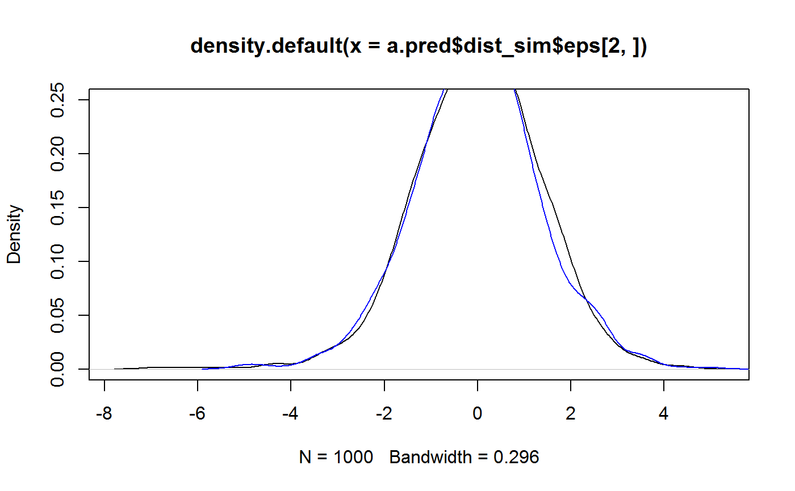
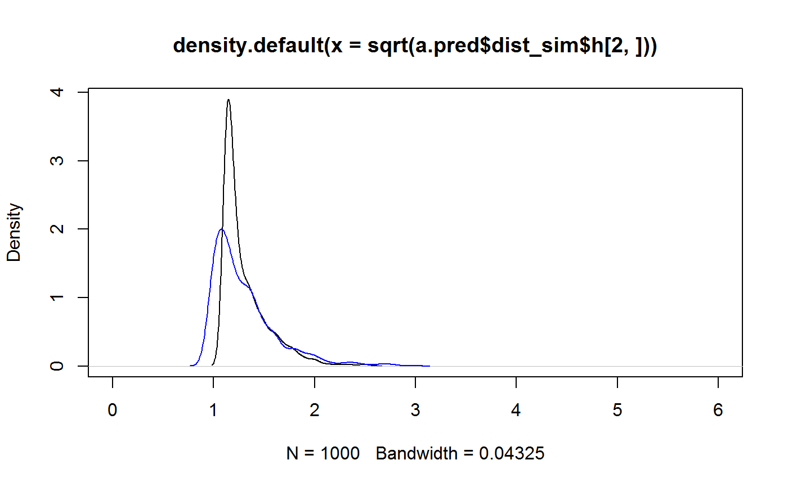

Predict GARCH(1,1) time series.
# S3 method for garch1c1 predict(object, n.ahead = 1, Nsim = 1000, eps, sigmasq, seed = NULL, ...)
| object | an object from class |
|---|---|
| n.ahead | maximum horizon (lead time) for prediction. |
| Nsim | number of Monte Carlo simulations for simulation based quantities. |
| eps | the time series to predict, only the last value is used. |
| sigmasq | the (squared) volatilities, only the last value is used. |
| seed | an integer, seed for the random number generator. |
| ... | currently not used. |
an object from S3 class "predict_garch1c1" containing
the following components:
point predictions (conditional expectations) of the time series (equal to zero for pure GARCH).
point predictions (conditional expectations)of the squared volatilities.
the model.
the call.
Prediction intervals for the time series, based on plug-in distributions, see Details.
Simulation based prediction intervals for the time series, see Details.
simulation samples from the predictive distributions of the time series and the volatilties.
Plug-in prediction intervals and predictive distributions are obtained by inserting the predicted volatility in the conditional densities. For predictions more than one lag ahead these are not the real predictive distributions but the prediction intervals are usually adequate.
For simulation prediction intervals we generate a (large) number of
continuations of the given time series. Prediction intervals can be based on
sample quantiles. The generated samples are stored in the returned object and
can be used for further exploration of the predictive
distributions. dist_sim$eps contains the simulated future values of
the time series and dist_sim$h the corresponding (squared)
volatilities. Both are matrices whose i-th rows contain the predicted
quantities for horizon i.
This function is under development and may be changed.
## set up a model and simulate a time series mo <- GarchModel(omega = 0.4, alpha = 0.3, beta = 0.5) a1 <- sim_garch1c1(mo, n = 1000, n.start = 100) ## predictions for T+1,...,T+5 (T = time of last value) ## Nsim is small to reduce the load on CRAN, usually Nsim is larger. a.pred <- predict(mo, n.ahead = 5, Nsim = 1000, eps = a1$eps, sigmasq = a1$h, seed = 1234) ## preditions for the time series a.pred$eps#> [1] 0 0 0 0 0## PI's for eps - plug-in and simulated a.pred$pi_plugin#> lwr upr #> [1,] -2.547809 2.547809 #> [2,] -2.594156 2.594156 #> [3,] -2.630646 2.630646 #> [4,] -2.659478 2.659478 #> [5,] -2.682320 2.682320a.pred$pi_sim#> 2.5% 97.5% #> [1,] -2.509509 2.528883 #> [2,] -2.716182 2.606704 #> [3,] -2.454450 2.659976 #> [4,] -2.570175 2.411107 #> [5,] -2.665515 2.681679## a DIY alculation of PI's using the simulated sample paths t(apply(a.pred$dist_sim$eps, 1, function(x) quantile(x, c(0.025, 0.975))))#> 2.5% 97.5% #> [1,] -2.509509 2.528883 #> [2,] -2.716182 2.606704 #> [3,] -2.454450 2.659976 #> [4,] -2.570175 2.411107 #> [5,] -2.665515 2.681679## further investigate the predictive distributions t(apply(a.pred$dist_sim$eps, 1, function(x) summary(x)))#> Min. 1st Qu. Median Mean 3rd Qu. Max. #> [1,] -4.022824 -0.8580885 -0.066231428 -0.004927742 0.8906549 4.154436 #> [2,] -6.917844 -0.8483323 0.056190554 0.012895781 0.9064100 4.410388 #> [3,] -5.295914 -0.8656511 -0.015399238 -0.004549729 0.8250439 4.363216 #> [4,] -3.839355 -0.8663160 -0.001722163 -0.029838411 0.7675387 4.277006 #> [5,] -5.085697 -0.8380230 -0.019148043 -0.016343148 0.8035548 4.965683## compare predictive densities for h=2 and h=5 plot(density(a.pred$dist_sim$eps[2, ]), ylim = c(0,.25))lines(density(a.pred$dist_sim$eps[5, ]), col = "blue")## predictions of sigma_t^2 a.pred$h#> [1] 1.689808 1.751847 1.801477 1.841182 1.872945## plug-in predictions of sigma_t sqrt(a.pred$h)#> [1] 1.299926 1.323573 1.342191 1.356902 1.368556## simulation predictive densities of sigma_t for h = 2 and h = 5 plot(density(sqrt(a.pred$dist_sim$h[2, ])), xlim = c(0, 6))lines(density(sqrt(a.pred$dist_sim$h[5, ])), col = "blue")## VaR and ES for different horizons cbind(h = 1:5, VaR = apply(a.pred$dist_sim$eps, 1, function(x) VaR(x, c(0.05))), ES = apply(a.pred$dist_sim$eps, 1, function(x) ES(x, c(0.05))) )#> h VaR ES #> [1,] 1 2.130677 2.659668 #> [2,] 2 2.122094 3.034189 #> [3,] 3 2.140999 2.691499 #> [4,] 4 2.092369 2.713634 #> [5,] 5 2.176770 2.914153